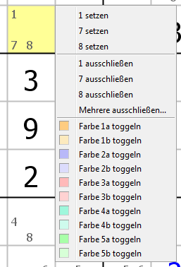

Kapitel 2: Sudokus lösen
Inhaltsverzeichnis
- Neues Sudoku erstellen oder eingeben
- Tastatur verwenden
- Maus verwenden
- Spielmodi
- Hinweise und Hilfen
- Filter verwenden
- Fortschrittsanzeige
- Rückgängig machen/Wiederherstellen
- Zwischenablage verwenden
- Spiel neu starten
- Sicherungspunkte
- Konfigurationen und Sudokus speichern/laden
- Sudokus ausdrucken
- Grafiken von Sudokus erzeugen
Neues Sudoku erstellen oder eingeben
Bevor man ein Sudoku lösen kann, muss man es erst einmal in das Programm eingeben. Das kann auf fünf verschiedene Arten erfolgen:
- Man kann ein zufällig generiertes Sudoku von HoDoKu erzeugen lassen
- Man kann ein Sudoku händisch eingeben
- Man kann ein Sudoku über die Zwischenablage des Betriebssystems importieren
- Man kann ein Sudoku aus einer Datei laden
- Man kann die Verlaufsfunktion benützen
Neues Sudoku erzeugen
Wie Sudokus erzeugt werden können, wird in Kapitel 4 detailliert beschrieben. Für jetzt genügen uns die Standardeinstellungen, also erst einmal nur die einfache Version:
- Schwierigkeitsgrad mit der Auswahlbox in der Werkzeugleiste (oder unter Optionen|Schwierigkeitsgrad) wählen
- Den Knopf links neben der Auswahlbox klicken (oder "Datei|Neues Sudoku" wählen oder [Strg]+[n] drücken)
HoDoKu erzeugt eine neues Sudoku nach dem Zufallsprinzip und prüft, ob es den richtigen Schwierigkeitsgrad besitzt. Eine Fortschrittsanzeige gibt an, wie viele Sudokus bereits probiert worden sind. Leichte Puzzles zu erzeugen geht praktisch verzögerungsfrei, je schwieriger das Sudoku sein soll, desto länger dauert es ein passendes zu finden. Der Vorgang kann jederzeit durch Drücken von "Abbrechen" in der Fortschrittsanzeige abgebrochen werden.
Neues Sudoku eingeben
Wenn das Sudoku, das gelöst werden soll, in einer Zeitung oder einem Buch abgedruckt ist, muss es manuell eingegeben werden.
"Datei|Neues Spiel eingeben" aus dem Menü wählen. Wenn mindestens eine Zelle bereits einen Wert enthält, erscheint eine Warnung (siehe links).
Wenn alle angegebenen Zellen korrekt eingegeben worden sind, "Datei|Spiel spielen" auswählen. HoDoKu überprüft zuerst, ob das eingegebene Sodku eine eindeutige Lösung hat. Ist das nicht der Fall, wird eine Warnung ausgegeben, das Sudoku wird aber trotzdem akzeptiert.
Bitte beachten: Hat das Sudoku mehr als eine Lösung, kann man trotzdem normal spielen. Man kann auch die Hinweise verwenden, allerdings muss man damit rechnen, dass einige der von HoDoKu berechneten Schritte schlicht und einfach falsch sein werden!
Wenn die Quelle des Sudokus wenigstens einigermaßen zuverlässig ist, bedeutet die Warnung normalerweise, dass etwas falsch eingegeben wurde (z.B. ein Wert vergessen oder in eine falsche Zelle geschrieben). Ist das der Fall, einfach "Datei|Spiel ändern" wählen, alle bereits existierenden Werte werden blau gefärbt um anzuzeigen, dass sie jetzt geändert werden können. Nun den Fehler korrigieren und wieder "Datei|Spiel spielen" wählen.
Wenn das Sudoku eine eindeutige Lösung hat, wird es von HoDoKu gelöst, die Bewertung wird in der Statusleiste angezeigt. Wenn einer der Nicht-Standard-Modi aktiv ist, wird der Inhalt des entsprechenden Bereichs angepasst.
Zwischenablage verwenden
Viele Webseiten oder Foren veröffentlichen Sudokus im Textformat (z.B. eine Zeichenkette mit 81 Ziffern oder Buchstaben, eine für jede Zelle). Man kann einfach versuchen die Zeichenkette über die Zwischenablage in HoDoKu einzufügen. Wenn das Format erkannt werden kann, wird das Sudoku auf Eindeutigkeit geprüft und gelöst. Die Verwendung der Zwischenablage ist weiter unten vollständig erklärt.
Sudoku aus Datei laden
Sudokus, die zu einem früheren Zeitpunkt in eine Datei gespeichert wurden (siehe Konfigurationen und Sudokus speichern/laden) können natürlich jederzeit wieder geladen werden. Die Sudokus werden in exakt dem Zustand wieder hergestellt, in dem sie zum Zeitpunkt der Sicherung waren.
Verlaufsfunktion benützen
Wird ein Sudoku mit "Datei|Neues Sudoku" erzeugt, wird es in der Defaultkonfiguration gespeichert. Die letzten 20 neu erzeugten Sudokus sind über ide Verlaufsfunktion ("Rätsel|Verlauf") abrufbar. Der Dialog der Verlaufsfunktion zeigt Datum und Uhrzeit, zu der das Sudoku erzeugt wurde, sowie seine Bewertung und die Schwierigkeitsstufe.
Wenn im Dialog "Vorschau" angewählt ist, können die Sudokus mit ihren Standardlösungen angezeigt werden, indem man auf die entsprechende Zeile klickt. Um die Konfigurationsdateien klein zu halten, werden nur die Angaben gespeichert. Das bedeutet, dass die Sudokus neu gelöst werden müssen bevor sie angezeigt werden können, was speziell für Sudokus der Schwierigkeitsstufe "Unfair" oder "Extrem" einige Zeit in Anspruch nehmen kann. Um unnötige Wartezeiten zu vermeiden kann "Vorschau" im Dialog abgewählt werden.
Klick auf "OK" lädt das ausgewählte Sudoku, "Abbruch" stellt das zuvor geladene Sudoku wieder her.
Tastatur verwenden
Normales Spiel
Sudokus mit Hilfe der Tastatur zu lösen funktioniert sehr einfach. Mit den Pfeiltasten kann man die aktive Zelle (gelber Hintergrund) wählen. Anschließend kann man eine Ziffer eingeben um den Wert der Zelle zu setzen.
[Strg]-Pfeiltaste springt nur nächsten ungelösten Zelle, [Pos1] geht ganz nach links, [Ende] ganz nach rechts, [Strg][Pos1] ganz nach oben und [Strg][Ende] ganz nach unten.
[0] (oder [Entf] oder [Rückschritt]) löscht den Wert einer Zelle. Das wird allerdings nicht empfohlen, wenn "Optionen|Alle Kandidaten anzeigen" gewählt ist und bereits Kandidaten eliminiert wurden (das Löschen eines Wertes aus einer Zelle fügt den entsprechenden Kandidaten in jeder Zelle hinzu, in der er jetzt wieder möglich ist, unabhängig davon, ob er bereits einmal eliminiert worden ist oder nicht - man sollte besser den Befehl "Rückgängig" verwenden).
[Strg] und eine Ziffer schaltet den entsprechenden Kandidaten in der aktiven Zelle ein oder aus.
[Umschalt][Strg][Pfeiltaste] springt zur nächsten ungelösten Zelle. Sind Filter aktiviert, springt man zur nächsten Zelle, die den gefilterten Kandidaten enthält. Für Tasten zum Aktivieren der Filter siehe unten.
Coloring
HoDoKu unterstützt Coloring. Insgesamt stehen fünf verschiedene Farbpaare zum Markieren von Zellen zur Verfügung (es wird der Hintergrund der Zelle geändert). Um eine Farbe zu setzen die Buchstaben [A] bis [E] verwenden, um die komplementäre Farbe zu wählen [Umschalt]+[A] bis [Umschalt]+[E] verwenden. Wird die selbe Taste oder Tastenkombination zwei Mal gedrückt, wird die Markierung einer Zelle wieder aufgehoben. Die Verwendung von Coloring har keinerlei Einfluss auf das Hinweis-System, es ist lediglich als Hilfe für den Spieler gedacht. [R] entfernt alle zusätzlichen Farben wieder.
Kandidaten können nur mit der Maus gefärbt werden (siehe unten).
Sonstiges
Wenn "Optionen|Alle Kandidaten anzeigen" nicht gewählt ist, kann man kurzfristig alle verbleibenden Kandidaten für die aktive Zelle oder für das ganze Sudoku anzeigen. [Umschalt]+[Strg] zeigt die Kandidaten der aktiven Zelle, [Umschalt]+[Alt] zeigt die Kandidaten für das ganze Gitter.
Maus verwenden
HoDoKu unterstützt zweiverschiedenen Mausmodi: "Normaler Mausmodus" und "Alternativer Mausmodus". Im "normalen" Modus verhält sich die Maus so, wie man das von den meisten Programmen gewöhnt ist: Ein einfacher Klick ändern die ausgewählte(n) Zelle(n), soll der Inhalt einer Zelle verändert werden, benötigt man einen Doppelklick oder das Kontextmenü.
Der "alternative" Modus wurde entwickelt, um mit möglichst wenigen Mausklicks spielen zu können. Er erlaubt ein wesentlich flüssigeres Spiel.
Normaler Mausmodus
Mausklick auf eine Zelle macht sie zur aktiven Zelle. Man kann mehrere Zellen gleichzeitig auswählen, indem man [Strg] oder [Umschalt] gedrückt hält, während man auf eine Zelle klickt. Hat man mehrere Zellen ausgewählt, wirken sich alle Aktionen (Wert setzen oder Kandidaten umschalten) auf alle Zellen aus.
Klick mit der rechten Maustaste auf eine Zelle aktiviert das Kontextmenü für diese Zelle (siehe links). Man kann Werte setzen, Kandidaten ausschließen oder Farben setzen/entfernen. Kandidaten können über das Kontextmenü nicht gefärbt werden. Wählt man "Mehrere ausschließen...", wird ein Eingabedialog angezeigt. In diesen kann man eine Liste von Kandidaten eingeben (mit Leerzeichen trennen). Alle diese Kandidaten werden aus der Zelle entfernt.
Was kann man noch alles mit der Maus machen:
- Doppelklick auf einen Kandidaten setzt ihn in der Zelle
- Doppelklick auf eine Zelle, in der nur noch ein Kandidat verfügbar ist (Naked Single) setzt diesen Kandidaten in der Zelle
- Sind Filter aktiv, setzt Doppelklick auf eine Zelle den gefilterten Kandidaten, wenn er ein Hidden Single in einem seiner Häuser ist
- Doppelklick auf einen Kandidaten während [Strg] gedrückt wird, entfernt ihn aus der Zelle
- [Strg]-Doppelklick auf den Platz, wo ein Kandidat angezeigt würde, wäre er gesetzt, fügt ihn zu den anderen Kandidaten in der Zelle hinzu
Wenn man nicht gerne doppelt klickt, sollte man den Alternativen Mausmodus oder die Ansicht Aktive Zelle ausprobieren.
Ist in den Einstellungen "[Umschalt] bewirkt Selektion" ausgeschaltet, bewirkt [Umschalt]-Klick auf eine Zelle nicht, dass ein rechteckiger Zellenbereich ausgewählt wird, sondern es werden Kandidaten ein-/ausgeschaltet.
Alternativer Mausmodus
Wie bereits oben gesagt, wurde dieser Modus so entworfen, dass man mit möglichst wenigen Mausklicks spielen kann:
- Einfacher Klick mit linker Maustaste auf einen Kandidaten setzt ihn in der Zelle.
- Einfacher Klick auf eine Zelle, die nur einen Kandidaten übrig hat (Naked Single), setzt diesen Kandidaten in der Zelle
- Wenn Filter aktiv sind, setzt ein einfacher Klick auf einen leeren Platz in einer gefilterten Zelle den gefilterten Kandidaten in der Zelle, wenn er ein Hidden Single in einem seiner Häuser ist
- Klick mit rechter Maustaste auf einen Kandidaten löscht ihn aus der Zelle
- Wenn Filter aktiv sind, entfernt ein Klick mit der rechten Maustaste auf einen leeren Platz in einer gefilterten Zelle den Filterkandidaten
- Klick mit der rechten Maustaste auf eine Stelle, wo ein Kandidat normalerweise angezeigt würde (derzeit aber nicht), aktiviert diesen Kandidaten für die Zelle
Vorsicht: Der alternative Mausmodus zusammen mit Filtern erlaubt ein sehr schnelles Spiel. Dabei muss man allerdings aufpassen: Auch wenn eine Zelle gerade gefiltert ist, entfernt ein Rechtsklick direkt auf einen Kandidaten genau diesen Kandidaten und nicht den gefilterten Kandidaten, ein Linksklick setzt diesen Kandidaten. Wenn der gefilterte Kandidat verändert werden soll, muss entweder der Kandidat direkt angeklickt werden oder leere Platz in der Zelle muss ausgewählt werden. Eine Zelle wird in 9 gleich große Teile geteilt, jeder ist einem Kandidaten zugeteilt. "Leerer Platz" bedeutet nun Platz, der keinem der noch gültigen Kandidaten zugeteilt ist.
Klick auf eine Zelle setzt den Fokus auf diese Zelle. Die Auswahl einer Gruppe von Zellen mit Hilfe von [Strg] oder der Hochstelltaste funktioniert gleich wie im normalen Mausmodus.
Färben
Komplizierte Techniken können oft einfach gefunden werden, indem Zellen oder Kandidaten Farben zugewiesen werden (siehe Coloring). Um zwischen dem Färbemodus für Zellen und dem für Kandidaten umzuschalten, kann man das Menü verwenden ("Optionen|Zellen färben" bzw. "Optionen|Kandidaten färben") oder auf den Text "Färben: Zelle" ("Färben: Kandidat") in der Statuszeile klicken.
Um eine Zelle (einen Kandidaten) zu färben, klickt man zuerst auf eine der Farben der Palette, die in der Statuszeile angezeigt wird. Der Mauszeiger verändert sich um anzuzeigen, dass man sich jetzt im Färbemodus befindet. Klick auf eine Zelle (einen Kandidaten) färbt sie, klick auf eine Zelle (einen Kandidaten) mit gedrückter [Umschalt]-Taste färbt sie mit der alternativen Farbe.
Klick auf das Palettenfeld mit der Hintergrundfarbe (normalerweise weiß) oder Drücken von [Esc] beendet den Färbemodus, Klick auf das Feld mit dem "R" beendet den Färbemodus und entfernt alle Farben.
Während der Färbemodus aktiv ist, sind alle anderen Mausfunktionen inaktiv (nur das Kontextmenü kann noch verwendet werden).
Ansicht "Aktive Zelle"
Die Ansicht "Aktive Zelle" ist quasi ein Vergrößerungsglas für die ausgewählte Zelle oder den ausgewählten Zellenbereich. Man kann damit Werte setzen, Kandidaten umschalten oder Farben für den Färbemodus (Zellen oder Kandidaten) auswählen.
Um einen Wert in der aktiven Zelle zu setzen klickt man die entsprechende Ziffer unter "Wert in Zelle setzen".
Um einen Kandidaten auszuschließen klickt man die entsprechende Ziffer unter "Kandidaten umschalten". Klick man auf eine der leeren Schaltflächen, wird der entsprechende Kandidat hinzugefügt.
Sind mehrere Zellen gewählt, kann man keine Kandidaten mehr hinzufügen. Der Text über dem Ziffernblock wird in "Kandidaten ausschließen" geändert um das zu verdeutlichen.
Die Farbpaletten können verwendet werden um den Färbemodus aufzurufen. Das funktioniert gleich wie in der Statuszeile. Wird eine Farbe von "Farbe für Zelle auswählen" genommen, wird wenn nötig automatisch auf "Zellen färben" umgeschaltet. Nimmt man sie von "Farbe für Kandidaten auswählen", wird entsprechend "Kandidaten färben" aktiviert.
Färbt man gerade Kandidaten, kann man auch auf die entsprechende Ziffer unter "Kandidaten umschalten" klicken.
Spielmodi
HoDoKu unterstützt drei verschiedene Spielmodi (alle sowohl für Sudoku als auch für ColorKu verfügbar): Spielen, Lernen und Üben. Diese Modi wurden dazu entwickelt, dass man leichter neue Techniken lernen oder bereits gelernte festigen kann.
Spielen
"Spielen" ist der Standardmodus. Er wird jedes Mal automatisch gewählt, wenn HoDoKu gestartet wird.
Lernen
"Lernen" wird aktiviert, indem man im Menü "Modus|Lernen..." wählt. Ein Dialog wird angezeigt, in dem eine oder mehrere Techniken gewählt werden können (empfohlen wird nur eine Technik zu wählen). Der Modus und der Name der gewählten Technik werden in der Statuszeile angezeigt. Ist der "Lernen"-Modus aktiv, enthält jedes neu erzeugte Sudoku mindestens eine Instanz einer der gewählten Techniken. Das Sudoku wird automatisch so weit gelöst, dass die Technik direkt angewendet werden kann.
Einige Dinge müssen dabei allerdings beachtet werden: Zunächst einmal kann man nur Techniken wählen, die im Solver aktiviert sind (siehe Lösungstechniken (de-)aktivieren). Zweitens kann es unter Umständen sehr lange dauern, bis ein Sudoku gefunden wird, das den Anforderungen entspricht (das trifft natürlich besonders dann zu, wenn man eine sehr seltene Technik ausgewählt hat). Unter Umständen zahlt es sich aus, die gewählte Technik zusätzlich noch in der Solver-Hierarchie nach oben zu schieben (siehe Reihenfolge der Lösungstechniken ändern).
Üben
"Üben" wird aktiviert, indem man im Menü "Modus|Üben..." wählt. Wie bei "Lernen" wird wieder ein Dialog zur Auswahl einer oder mehrerer Techniken angezeigt. Jedes neu erzeugte Sudoku wird mindestens eine Instanz einer der gewählten Techniken enthalten (wieder wie bei "Lernen"). Der einzige Unterschied zu "Lernen" ist, dass das neu erzeugte Sudoku im Anfangszustand angezeigt wird.
Hinweis und Hilfen
Hilfe anfordern
Nichts ist frustrierender als beim Lösen eines Sudokus stecken zu bleiben. Um solche Situationen zu vermeiden kann HoDoKu Hinweise zu möglichen nächsten Schritten geben (welcher Schritt angedeutet wird, wird durch die aktuelle Solver-Konfiguration bestimmt, siehe Lösungsstrategie).
Hinweise gibt es in drei Ausführungen (alle im Rätsel-Menü): "Vager Hinweis" ([Alt]+[F12]), "Konkreter Hinweis" ([Strg]+[F12]) und "Lösungsschritt zeigen" ([F12] oder "Neuer Hinweis" im Hinweis-Bereich).
"Vager Hinweis" zeigt nur den Namen des Lösungsschritts, "Konkreter Hinweis" gibt etwas mehr Details (z.B. betroffene Kandidaten) und "Lösungsschritt zeigen" zeigt den Schritt direkt im Sudoku an und schreibt eine Textrepräsentation des Schrittes in das Textfeld im Hinweis-Bereich.
Es ist auch möglich alle Singles auf einmal ausführen zu lassen ("Rätsel|Setze alle Singles" oder [F11]).
Hinweis-Bereich verwenden
Jedes Mal, wenn ein Lösungsschritt im Sudoku angezeigt wird, wird ein beschreibender Text in das Textfeld des Hinweis-Bereichs geschrieben. Das untere Beispiel zeigt einen "Kraken Fisch":
Die Knöpfe im Hinweis-Bereich können dazu verwendet werden, nach dem nächsten verfügbaren Lösungsschritt zu suchen ("Neuer Hinweis" - äquivalent zu [F12]) oder um den Solver zu konfigurieren "Konfigurieren" - zeigt die Solver-Seite im Einstellungen-Dialog). Wenn ein Schritt angezeigt wird, sind auch die Knöpfe "Ausführen" (führt den Schritt aus und beendet die Anzeige) und "Abbrechen" (beendet die Anzeige ohne den Schritt auszuführen) verfügbar.
"Lösen bis" führt automatisch die nächsten Lösungsschritte aus, solange sie unter "Einstellungen|Fortschritt" (siehe Fortschrittsmaß) ausgewählt sind. Diese Funktion ermöglicht es dem Benutzer, sich auf bestimmte Lösungstechniken zu konzentrieren: Einfach alle Techniken, die man nicht selbst suchen will, unter "Einstellungen|Fortschrittsmaß" einstellen und "Lösen bis" anklicken.
Die meisten Lösungsschritte benötigen nur eine Textzeile im Hinweis-Bereich. Lediglich sehr komplizierte Techniken wie Forcing Chains, Forcing Nets oder Kraken Fish bestehen aus mehreren Unterschritten, die jeweils auf einer eigenen Zeile angezeigt werden. Da diese komplizierten Schritte oft viele Zellen und Kandidaten betreffen, kann die Anzeige sehr verwirrend werden. Als Abhilfe kann HoDoKu die Unterschritte einzeln anzeigen. Klickt man im Textfeld auf einen Substep, wird nur dieser Schritt angezeigt. Klickt man die erste Zeile, wird wieder alles gezeigt. Bei Kraken Fish werden allerdings nur der Fish selbst und die Eliminierungen angezeigt. Die Chains des Kraken Fisches müssen extra angewählt werden.
Die obigen Bilder demonstrieren die Anzeige des Kraken Fisches des Screenshots vom Hinweis-Bereich. Das linke Bild zeigt den Fisch und die Eliminierung (erste Zeile der Textbox geklickt), das rechte Bild zeigt den Fisch zusammen mit der zweiten Chain (letzte Zeile der Textbox geklickt).
Filter verwenden
Filter eignen sich hervorragend zum Finden einfacher Lösungsschritte (Singles, Locked Candidates). Ein Filter färbt lediglich den Hintergrund einer Zelle um anzuzeigen, ob eine bestimmte Ziffer in diese Zelle platziert werden kann.
HoDoKu unterstützt zwei Filter-Modi: Anzeige aller verbotenen Zellen für den gefilterten Kandidaten in rot oder Anzeige aller erlaubten Zellen für diesen Kandidaten in grün. Die obigen Bilder zeigen beide Varianten jeweils für die Ziffer 6. Man kann sehr leicht sehen, dass Kandidat 6 in Block 5 nur mehr in Spalte 6 stehen darf. Daher darf 6 von r9c6 eliminiert werden (Locked Candidates Type 1 - Pointing).
Um einen Filter für einen Kandidaten ein- bzw. auszuschalten einfach den Knopf mit der entsprechenden Ziffer in der Werkzeugleiste klicken oder [F1] bis [F9] drücken (Achtung: [F1] ist nicht mit einem Hilfesystem verknüpft).
Um den Filtermodus umzuschalten den Knopf mit dem roten und grünen Rechteck in der Werkzeugleiste klicken oder [Umschalt] gedrückt halten, während eine der [Fx]-Tasten gedrückt wird.
Wenn gerade ein Filter aktiv ist, ändern [<] ([.]) und [>] ([,]) die gefilterte Ziffer. [Leerzeichen] schaltet den gefilterten Kandidaten in der aktiven Zelle ein und aus, [Eingabe] setzt ihn in der Zelle, wenn er ein Naked Single oder ein Hidden Single für den gefilterten Kandidaten ist.
Es ist möglich, mehr als einen Kandidaten zu filtern: Drücken von [Strg] während eine der [Fx]-Tasten gedrückt ist, fügt Kandidaten zum Filterset hinzu bzw. entfernt sie. Wenn mehr als ein Kandidat gefiltert wird, zeigt HoDoKu nur jene Zellen an, in denen alle Filterkandidaten möglich/verboten sind. Dieses Verhalten kann unter "Einstellungen|Allgemein|ODER statt UND für Filter" geändert werden: Ist die Einstellung aktiv, werden alle Zellen markiert, die mindestens einen der gefilterten Kandidaten (nicht) enthalten.
Fortschrittsanzeige
Die Fortschrittsanzeige befindet sich in der Statusleiste rechts neben der Anzeige der Schwierigkeitsstufe des Sudokus. Der Screenshot oben zeigt ein unfaires Sudoku mit Bewertung 1736. Die Fortschrittsanzeige zeigt eine gelbe Kugel und den Text "53%". Die gelbe Kugel bedeutet, dass zum Lösen des Sudokus noch mindestens eine schwere Technik nötig ist (Gelb ist die Standardfarbe für "Schwer"), der Text bedeutet, dass die verbleibenden Lösungstechniken noch 53% der Bewertungspunkte des gesamten Sudokus haben.
Die Fortschrittsanzeige wird nach jeder Änderung am Sudoku angepasst. HoDoKu löst das verbleibende Sudoku automatisch im Hintergrund und setzt die Anzeigen entsprechend.
In HoDoKus Standardeinstellungen sind die einzigen Techniken mit Stufe "Leicht" Singles. Das bedeutet, dass das Sudoku nur mit Singles gelöst werden kann, sobald die Kugel der Fortschrittsanzeige weiß wird. In diesem Zustand wird das Sudoku mit [F11] komplett gelöst. Das trifft natürlich nur zu, wenn die Einstellungen für Lösungsschritte nicht verändert worden sind.
Achtung: Der restliche Abschnitt ist nur für fortgeschrittene Benutzer gedacht und muss nicht gelesen werden, um mit HoDoKu spielen zu können. Sie können auch sofort zum nächsten Abschnitt, Rückgängig machen/Wiederherstellen, springen.
Das Verhalten der Fortschrittsanzeige kann zuweilen verwirrend sein. Bei einigen Sudokus kann der Prozentsatz plötzlich stark fallen, in anderen Fällen kann er sogar steigen, wenn man einen Kandidaten eliminiert. Der erste Fall (Eliminieren eines Kandidaten macht das Sudoku auf ein Mal wesentlich leichter) ist unmittelbar einsichtig: Jedes Sudoku verfügt über eine oder mehrere Zellen, die das Sudoku auf Singles reduzieren, sobald sie gesetzt werden. Diese Zellen werden normalerweise als "Hintertüren" bezeichnet. HoDoKus Automatik sucht nach Lösungsschritten in einer genau festgelegten Reihenfolge. Ein Mensch geht wesentlich intuitiver vor. Wenn eine Eliminierung, die nicht Teil der Computerlösung ist, eine Hintertür öffnet, wird das Sudoku tatsächlich mit einem Schlag sehr leicht.
Der zweite Fall (Eliminieren eines Kandidaten macht das Sudoku schwerer), ist nicht so einfach zu verstehen, aber es kommt trotzdem vor. Betrachten wir das folgende Beispiel (von Benutzer CCV zur Verfügung gestellt - herzlichen Dank dafür). Das ursprüngliche Sudoku ist:
8......23.6.1..7.......816597..325......9..37..85.....2846.......7..1...6.......2
HoDoKu stuft das Puzzle aufgrund der hohen Punktezahl von 2492 als "Extrem" ein. Der schwerste Lösungsschritt in der Computerlösung ist ein Finned Swordfish ("Unfair"). Das Sudoku wurde bereits bis zum folgenden Stand gelöst:
:0000:x:8..+7+6..23.6.1..7+8.+7....816597+6.325+1.+1...9+6.37..85+1+7.+9.2846....+1..7+2.1.+4.6.......2:926 932 434 467 576 494 894 396 996::
Die noch verbleibende Wertung ist 1396, es werden nur noch Techniken der Stufe "Schwer" benötigt, die Kugel ist daher gelb.
Betrachten wir nun den Screenshot: Ein Uniqueness Test Typ 1 ist verfügbar: 5/7 in r7c58,r9c58 => r9c5<>5, r9c5<>7.
Wird dieser Schritt ausgeführt, bleibt die Kugel gelb und der Prozentsatz wird ein bisschen kleiner - das entspricht dem, was man sich erwartet.
Nun eliminieren wir nur Kandidat 7 aus r9c5 (Kandidat 5 bleibt, wo er ist): Die Fortschrittsanzeige springt auf "Unfair", das Sudoku ist plötzlich schwerer als zuvor. Wie ist das möglich?
Betrachten wir die "normale" Lösung (den Lösungsweg nach Eliminierung beider Kandidaten aus r9c5):
Das UR 1 wird gefolgt von ein paar Singles, danach wird ein X-Wing verfügbar: 5 c15 r28 => r2c36,r8c2<>5 (linker oberer Screenshot). Der X-Wing eliminiert unter anderem 5 aus r2c6.
Etwas später wird ein W-Wing möglich (rechter oberer Screenshot): 4/5 in r2c1,r9c6 verbunden durch 5 in r8c15 => r2c6<>4. Der W-Wing macht aus r2c6 ein Naked Single, das Sudoku kann mit Singles und einem zusätzlichen W-Wing gelöst werden.
Nun betrachten wir, was passiert, wenn nur 7 aus r9c5 eliminiert wird:

Die Singles sind dieselben wie oben, aber dort, wo der X-Wing sein sollte, haben wir die Situation des linken oberen Screenshots: Die verbleibende 5 in r9c5 verhindert den X-Wing und das bedeutet, dass 5 auch in r2c6 stehen bleibt. Der W-Wing später ist derselbe wie vorher (rechter oberer Screenshot), aber da 5 nie aus r2c6 eliminiert wurde, wird diese Zelle kein Naked Single und die leichteste verfügbare Technik ist nun eine XY-Chain, eine "Unfaire" Technik - das Sudoku ist also tatsächlich schwerer geworden.
In den meisten Fällen arbeitet die Fortschrittsanzeige allerdings wie erwartet und eignet sich gut zur Schätzung, wie viel Arbeit noch auf den User wartet, bis das Sudoku gelöst ist.
Rückgängig machen/Wiederherstellen
HoDoKu verfügt über eine unbegrenzte Rückgängig/Wiederherstellen-Funktion. Diese Funktion kann über die Werkzeugleiste, das Bearbeiten-Menü oder mit Hilfe der Shortcuts [Strg]+[Z] (Rückgängig) bzw. [Strg]+[Y] (Wiederherstellen) aufgerufen werden.
Beide Funktionen beziehen sich nur auf das aktuelle Sudoku. Wird ein neues Sudoku erzeugt, eingegeben oder über die Zwischenablage eingefügt, wird die Funktion zurückgesetzt. Die oben genannten Aktionen können daher nicht rückgängig gemacht werden.
Die Rückgängig-Funktion sollte dazu verwendet werden, irrtümlich eingegebene Werte wieder aus Zellen zu löschen. Wenn mit "Optionen|Ungültige Werte anzeigen" oder "Optionen|Abweichungen von der Lösung anzeigen" gespielt wird, können Fehler ja sofort erkannt werden. Wird der falsche Wert mit [0], [Entf] oder [Rückschritt] gelöscht, wird der Kandidat für die gelöschte Ziffer in allen Zellen wieder hergestellt, in denen diese Ziffer prinzipiell noch möglich ist, auch wenn er bereits eliminiert war. Rückgängig fügt nur solche Kandidaten ein, die noch vorhanden waren, bevor der Wert in die Zelle eingegeben wurde.
Zwischenablage verwenden
Die Zwischenablage des Betriebssystems bietet eine bequeme Möglichkeit, Sudokus zwischen verschiedenen Sudoku-Programmen auszutauschen oder Sudokus von Webseiten oder Sudoku-Sammlungen einzufügen. Alle Kopierfunktionen verwenden Textrepräsentationen des Sudokus.
HoDoKu unterstützt die folgenden Kopieroperationen:
- Angabe kopieren ([Ctrl]+[G]): Kopiert nur die Zellen, die am Beginn
gesetzt waren (unabhängig vom Zustand des Sudokus) als 81 Zeichen lange
Zeichenkette. Die meisten Programme können dieses Format verstehen.
Ein Beispiel:
6....23..1256.......47...2.73....84...........46....15.5...81.......3472..72....8 - Werte kopieren: Die Inhalte aller bereits gelösten Zellen werden als 81 Zeichen lange Zeichenkette kopiert. Die meisten Programme können dieses Format verstehen. Beispiel siehe oben.
- Kandidaten kopieren ([Ctrl]+[C]): Kopiert den aktuellen Zustand des
Sudokus als so genanntes PM ("Pencil Mark Grid"). Für jede Zelle werden alle
noch möglichen Kandidaten geschrieben. Diese Format wird normalerweise in Foren
verwendet um Sudokus mit anderen Mitgliedern auszutauschen. Beispiel:
.--------------.----------------.------------. | 6 7 89 | 189 19 2 | 3 5 4 | | 1 2 5 | 6 3 4 | 9 8 7 | | 3 89 4 | 7 58 59 | 6 2 1 | :--------------+----------------+------------: | 7 3 29 | 19 25 1569 | 8 4 69 | | 5 1 289 | 89 4 679 | 27 69 3 | | 89 4 6 | 3 28 79 | 27 1 5 | :--------------+----------------+------------: | 2 5 3 | 4 7 8 | 1 69 69 | | 89 689 1 | 5 69 3 | 4 7 2 | | 4 69 7 | 2 169 169 | 5 3 8 | '--------------'----------------'------------'
- Lösungsschritt kopieren: Wie Kandidaten kopieren, wird
aber gerade ein Lösungsschritt angezeigt, werden die betroffenen Zellen
mit Sonderzeichen markiert, die Textdarstellung wird mit ausgegeben. Beispiel:
.---------------.--------------------.------------. | 6 7 89 | 189 19 2 | 3 5 4 | | 1 2 5 | 6 3 4 | 9 8 7 | | 3 89 4 | 7 589 59 | 6 2 1 | :---------------+--------------------+------------: | 7 3 29 | 159 12569 1569 | 8 4 69 | | 5 1 289 | #89 4 679 | 27 69 3 | | #89 4 6 | 3 #289 79 | 27 1 5 | :---------------+--------------------+------------: | 2 5 3 | 4 7 8 | 1 69 69 | | #89 689 1 | 5-9 569 3 | 4 7 2 | | 4 69 7 | 2 169 169 | 5 3 8 | '---------------'--------------------'------------' W-Wing: 9/8 in r5c4,r8c1 verbunden durch 8 in r6c15 => r8c4<>9
- Bibliotheksformat kopieren: Das Bibliotheksformat von HoDoKu ist ein proprietäres Format, das Informationen über Initialwerte, gelöste Zellen, Kandidaten und Lösungsschritte in einer einzelnen Zeile enthält. Es wird von der internen Regressions-Bibliothek verwendet (siehe Bibliothek für Regressionstests).
- Für SimpleSudoku kopieren: Kopiert das Sudoku in einem Format,
das vom Programm SimpleSudoku verwendet wird. Dieses Format verwendet mehrere
Abschnitte, um zwischen Angabe, vom Benutzer gesetzten Zellen und Naked Singles
zu unterscheiden. Wenn Sie nicht SimpleSudoku verwenden, sollten Sie für diesen Zweck
besser das Bibliotheksformat verwenden. Ein Beispiel (Angabe, gesetzte Zellen,
PM Grid):
*-----------* |6..|..2|3..| |125|6..|...| |..4|7..|.2.| |---+---+---| |73.|...|84.| |...|...|...| |.46|...|.15| |---+---+---| |.5.|..8|1..| |...|..3|472| |..7|2..|..8| *-----------* *-----------* |67.|..2|354| |125|634|987| |3.4|7..|621| |---+---+---| |73.|...|84.| |51.|.4.|..3| |.46|3..|.15| |---+---+---| |253|478|1..| |..1|..3|472| |4.7|2..|538| *-----------* *--------------------------------------------------------------------* | 6 7 89 | 189 189 2 | 3 5 4 | | 1 2 5 | 6 3 4 | 9 8 7 | | 3 89 4 | 7 589 59 | 6 2 1 | *----------------------+----------------------+----------------------| | 7 3 29 | 159 12569 1569 | 8 4 69 | | 5 1 289 | 89 4 679 | 27 69 3 | | 89 4 6 | 3 289 79 | 27 1 5 | *----------------------+----------------------+----------------------| | 2 5 3 | 4 7 8 | 1 69 69 | | 89 689 1 | 59 569 3 | 4 7 2 | | 4 69 7 | 2 169 169 | 5 3 8 | *--------------------------------------------------------------------*
Einfügen ([Strg]+[V]) versteht alle oben beschriebenen Formate und noch einige andere. Sollte ein Format nicht richtig dekodiert werden können, wird normalerweise die Warnung "Das Puzzle hat mehr als eine Lösung und ist daher ungültig" angezeigt.
Wenn "'0' für Zwischenablage" in "Bearbeiten|Einstellungen|Lösungsschritte" gewählt ist, wird für noch nicht gelöste Zellen '0' statt '.' verwendet.
Spiel neu starten
Neu starten
"Bearbeiten|Spiel neu starten" ([Strg]+[R]) startet das Spiel komplett neu. Dabei werden nicht nur alle bereits gelösten Zellen gelöscht, es werden auch alle neu erstellten oder geänderten Lösungswege gelöscht. Rückgängig/Wiederherstellen wird zurückgesetzt.
Zurücksetzen
"Bearbeiten|Spiel zurücksetzen" versetzt das aktuelle Sudoku in den Initialzustand (alle von Ihnen gesetzte Zellen werden gelöscht). Eventuelle Lösungswege werden nicht verändert, Rückgängig/Wiederherstellen wird zurückgesetzt.
Ab hier lösen
HoDoKu kennt keine "Ab hier lösen"-Funktion, da das Probleme mit der Synchronisation der verschiedenen Anzeigemodi gäbe. Über die Zwischenablage läßt sich eine solche Funktion aber leicht nachbilden:
- Um vom aktuellen Zustand zu lösen: "Bibliotheksformat kopieren" und dann "Einfügen" wählen
- Um zum Urzustand zurückzukehren: "Angabe kopieren" und "Einfügen"
Sicherungspunkte
Obwohl es höchstwahrscheinlich wahr ist, dass jedes Sudoku nur mit Logik gelöst werden kann, ist Raten manchmal trotzdem praktisch (oder auch notwendig). Ist "Optionen|Abweichungen von der Lösung anzeigen" gewählt, können Fehler sofort erkannt werden. Wenn nicht, tritt irgendwann ein Widerspruch auf. In einem solchen Fall ist die "Rückgängig"-Funktion gefragt. Muss man allerdings viele Schritte rückgängig machen, kann das ziemlich mühsam werden. Hier setzt die Funktion "Sicherungspunkte" an: Ein Sicherungspunkt ist ein Schnappschuss vom aktuellen Zustand des Sudokus, inklusive Lösungswege, Filter, Farben usw.
Mit HoDoKu kann man beliebig viele Sicherungspunkte pro Sudoku anlegen und jederzeit zu jedem dieser Sicherungspunkte zurückkehren. Wird das Sudoku in eine Datei geschrieben, werden die Sicherungspunkte mit gespeichert.
Andere Sudoku-Programme haben ähnliche Features, manchmal als "zweiter Stift" bezeichnet. Der Unterschied zwischen diesen alternativen Stiften und Sicherungspunkten ist, dass Sicherungspunkte nicht nur das Sudoku selbst speichern und dass beliebig viele Sicherungspunkte angelegt werden können.
Sicherungspunkt erstellen
Um einen Sicherungspunkt zu erstellen muss man "Rätsel|Sicherungspunkt setzen..." im Menü wählen. In einem Dialog muss man einen Namen eingeben, der zur leichteren Unterscheidung mehrerer Sicherungspunkte dient. Natürlich kann man auch die Vorgabe übernehmen. Mit "Ok" wird der Sicherungspunkt erstellt.
Wie oben beschrieben enthält der Sicherungspunkt den kompletten Status des Sudokus: Angabe, gesetzte Werte, Kandidaten, gerade angezeigte Lösungsschritte, Filter, gefärbte Zellen oder Kandidaten und Lösungswege.
Sicherungspunkt wiederherstellen
Um zu einem zuvor gespeicherten Sicherungspunkt zurückzukehren wählt man "Rätsel|Sicherungspunkt wiederherstellen..." im Menü. Eine Liste mit allen verfügbaren Sicherungspunkten wird angezeigt.
Klickt man eine Zeile an, wird der entsprechende Zustand angezeigt. Hat man die richtige Zeile gefunden, klickt man "Ok" um den Zustand zu laden. "Abbrechen" kehrt zum aktuellen Zustand zurück.
Lösungswege sind Teil eines Sicherungspunktes. Hat man sie verändert oder neue hinzugefügt, gehen diese Änderungen verloren, wenn man zu einem anderen Sicherungspunkt zurückkehrt. Um das zu verhindern kann man einen neuen Sicherungspunkt erstellen, bevor man einen alten wiederherstellt.
Konfigurationen und Sudokus speichern/laden
HoDoKu kann Sudokus und Konfigurationen in Dateien schreiben. Konfigurationen werden als XML-Dateien mit der Dateiendung "*.hcfg" gespeichert. Sudokus können als Textdateien (veschiedene Formate werden unterstützt - siehe Screenshot links) oder als proprietäre "*.hsol"-Dateien gespeichert werden. Die verschiedenen Textformate werden von vielen anderen Sudoku-Programmen verstanden, hsol-Dateien können nur von HoDoKu selbst gelesen werden.
Der Vorteil von hsol-Dateien liegt darin, dass in ihnen nicht nur die Sudokus selbst, sondern der komplette Zustand des Programms, inklusive Lösungswege und Sicherheitspunkte, gespeichert werden. Das hsol-Format wird daher empfohlen.
Sudokus werden mit "Datei|Sudoku speichern unter..."([Umschalt]+[S]) gespeichert und mit "Datei|Sudoku laden..." ([Strg]+[O]) wieder geladen. Wenn ein Puzzle geladen wurde, wird der Name der Datei in der Titelleiste des Fensters angezeigt. "Datei|Sudoku speichern" ([Strg]+[S]) speichert den aktuellen Zustand in diese Datei. Konfigurationen werden mit "Datei|Konfiguration laden..." geladen und mit "Datei|Konfiguration speichern unter..." wieder geschrieben.
Sowohl hsol- als auch hcfg-Dateien sind XML-Dateien, die hsol-Dateien werden jedoch komprimiert (zip), um Platz zu sparen. Das XML-Format ermöglicht es, Dateien direkt mit einem Editor zu verändern. Davon wird allerdings strikt abgeraten.
Sudokus ausdrucken
Normaler Druck
Sudokus können genauso, wie sie am Bildschirm aussehen, ausgedruckt werden (ein Sudoku pro Seite). Die Einstellungen für Drucker und Seiten werden mit den normalen Standarddialogen des Betriebssystems durchgeführt.
Gedruckt wird mit "Datei|Drucken..." ([Strg]+[P]).
Erweiterter Druck
Im normalen Druckmodus wird immer ein Sudoku pro Seite gedruckt. Wenn mehr Flexibilität gefragt ist, kann der Booklet-Drucker verwendet werden, der unter "Datei|Erweiterter Druck..." aufgerufen werden kann.
Der Einstellungsdialog für den erweitertern Druck bietet verschiedene Layouts sowohl im Hoch- als auch im Querformat. Maximal 4 Sudokus können pro Seite gedruckt werden. Verschiedene Optionen beeinflussen den Druck:
- Rating ausgeben: Druckt das Rating unter jedem Sudoku
- Alles schwarz drucken: Ignoriert die Farbeinstellungen und gibt alles schwarz aus (das verbessert die Qualität auf Schwarz-/Weiß-Druckern, die Farben über Dithering emulieren)
- Booklet erstellen: Die Sudokus werden so auf den Seiten platziert, dass die Ausdrucke wie ein Booklet gefaltet werden können
- Papier manuell umdrehen: Nur verfügbar, wenn "Booklet erstellen" ausgewählt wurde. Druckt zuerst alle Vorderseiten und pausiert dann, damit die Blätter umgedreht wieder in den Drucker eingelegt werden können, bevor die Rückseiten gedruckt werden
Der Inhalt des Booklets besteht aus bis zu fünf Abschnitten. Jeder Abschnitt besteht aus einer beliebigen Anzahl von Sudokus, die alle die selben Parameter besitzen (Schwierigkeitsstufe, Modus und Kandidatendruck). Wenn "Anzahl Sudokus" leer gelassen wird, wird der entsprechende Abschnitt ignoriert. "Drucken..." startet den Druckprozess. Normalerweise müssen die Sudokus zuerst erzeugt werden, was abhängig von den Abschnittsdefinitionen einige Zeit dauern kann. Sudokus, die für den Druck erzeugt wurden, werden zum Verlauf hinzugefügt.
Der Druckprozess kann jederzeit unterbrochen werden.
Achtung: Wenn ein Booklet ohne die Option "Papier manuell umdrehen" gedruckt werden soll, muss der Drucker für beidseitigen Druck in Querformat konfiguriert werden.
Grafiken von Sudokus erzeugen
HoDoKu kann hochauflösende Grafiken der aktuellen Sudokus erstellen und im PNG-Format speichern. Größe und Auslösung der Grafik können beliebig gewählt werden.
Um eine Grafik zu erstellen muss eine passende Maßeinheit ausgewählt werden (Millimeter, Zoll oder Pixel). Anschließend Größe und Auflösung eingegeben und "Bild speichern als" anklicken. Ein Dateiauswahldialog erscheint, mit dem Pfad und Name der Ausgabedatei gewählt werden können.
Die Auflösung wird als Metadaten in die PNG-Datei geschrieben. Die meisten Textverarbeitungsprogramme berücksichtigen diese Information und passen die Anzeigegröße der Datei entsprechend an. Webbrowser ignorieren diese Daten allerdings meist.
Um Grafiken für das Web zu erzeugen, sollten "Pixel" als Einheit und "72dpi" als Auflösung gewählt werden (die oben gezeigten Sudokus wurden so erzeugt, die Größe beträgt 400px).
Soll die Grafik in einer Textverarbeitung oder einem Satzprogram verwendet werden, sollte "Millimeter" oder "Zoll" gewählt werden, außerdem sollte eine hohe Auflösung eingestellt werden (z.B.: "300dpi"). Wird die so erstellte Grafik mit 100% Größe importiert, sollte sie genau so groß sein, wie beim Erstellen angegeben.
Copyright © 2008-12 von Bernhard Hobiger
Zuletzt geändert am 5. Mai 2025 von shorty#3746
(basierend auf dem 1to9only Github-Repo)
Alles Material auf dieser Site unterliegt der GNU FDLv1.3.